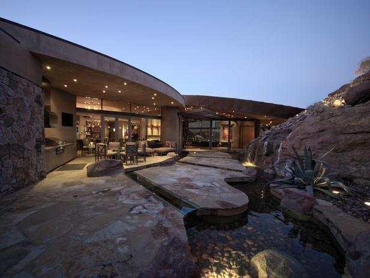

Bed and Breakfast Utah
When you're ready to come in from the great outdoors
What's so special about the mayor's house?
Welcome to the Mayor's House Bed and Breakfast, located in the town of Moab, in the heart of beautiful Canyonlands, Utah. The Mayor's House is one of the most comfortable and friendly B&Bs in the Moab Valley.
The house was built in 1980; it is a rambling 6000 square-foot home featuring a large common room, six guest rooms, and spacious decks overlooking beautiful landscaped gardens. The B&B also features a large, heated swimming pool and hot tub.
Use us as your home base to explore beautiful national and state parks, spectacular canyons, rugged mountains and breathtaking vistas. Let the staff at the Mayor's House help you plan your itinerary to take advantage of the many recreational activities available here in the heart of red rock country.
Come and see why so many of our guests return to see us year after year.
Our Location

The Mayor's House is perfectly situated in a quiet neighborhood overlooking the town of Moab, just 4 1/2 blocks from downtown-area shopping, restaurants, museums and art galleries. The view of the world-famous Slickrock Bike Trail makes the perfect background for a relaxing afternoon by the pool.
Access To Local Attractions

The B&B is within a few minutes walk from Moab's central business district, but well away from the noise and congestion of downtown. The B&B is also situated close to the Slickrock Bike Trail, 10 minutes from the entrance to Arches National Park, and 30 minutes from the entrance to Canyonlands National Park. Many bike trails, hiking trails, and jeep trails are all within a short distance of the B&B.
Bring Your Toys

We invite you to make use of our ample off-street parking, which can accommodate virtually all types of vehicles and trailers. A locked bike storage shed is also available.
Directions
Moab is approximately 4½ hours from Salt Lake City, Utah, and six hours from Denver, Colorado.